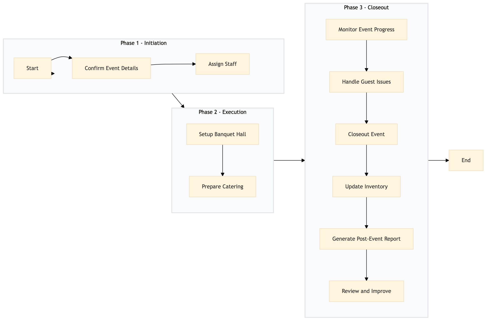

| Role | Steps |
|---|---|
| Event Manager | 1.1 1.2 3.1 3.2 3.3 3.5 3.6 |
| Banquet Manager | 2.1 |
| Catering Manager | 2.2 3.4 |
| Front Desk Agent | 3.2 |
| Concierge | 3.2 |
| Step | Name | Role | System | Input | Output | KPI | Dec? | Exc? | Pain Point / Risk |
|---|---|---|---|---|---|---|---|---|---|
| 1.1 | Confirm Event Details | Event Manager | Oracle OPERA Cloud | Event day checklist | Confirmed event details | Less than 5 minutes | N | Y | Incorrect or incomplete event details |
| 1.2 | Assign Staff | Event Manager | Oracle OPERA Cloud, Workday HCM | Confirmed event details | Staff assignment list | Less than 10 minutes | N | Y | Insufficient staff availability |
| 2.1 | Setup Banquet Hall | Banquet Manager | Oracle OPERA Cloud, Honeywell INNCOM | Staff assignment list | Banquet hall setup confirmation | Less than 15 minutes | N | Y | Technical issues with audio/visual equipment |
| 2.2 | Prepare Catering | Catering Manager | Oracle MICROS Simphony, Birchstreet Procurement | Event day checklist | Catering preparation confirmation | Less than 20 minutes | N | Y | Ingredient shortages |
| 3.1 | Monitor Event Progress | Event Manager | Oracle OPERA Cloud, Microsoft Power BI | Banquet hall setup confirmation, catering preparation confirmation | Event progress report | Less than 5 minutes every hour | Y | N | Delays in event progression |
| 3.2 | Handle Guest Issues | Front Desk Agent, Concierge | Oracle OPERA Cloud, Marriott Bonvoy CRM | Guest complaints or issues | Issue resolution confirmation | Less than 10 minutes | Y | N | Handling difficult guests |
| 3.3 | Closeout Event | Event Manager | Oracle OPERA Cloud, IDeaS G3 RMS | Event progress report, issue resolution confirmation | Event closeout report | Less than 15 minutes | N | Y | Incomplete event documentation |
| 3.4 | Update Inventory | Catering Manager | Oracle MICROS Simphony, SAP S/4HANA | Event closeout report | Updated inventory list | Less than 10 minutes | N | Y | Incorrect inventory adjustments |
| 3.5 | Generate Post-Event Report | Event Manager | Oracle OPERA Cloud, Microsoft Power BI | Updated inventory list | Post-event report | Less than 20 minutes | N | Y | Data entry errors |
| 3.6 | Review and Improve | Event Manager, General Manager | Oracle OPERA Cloud, Salesforce | Post-event report | Improvement plan | Less than 15 minutes | Y | N | Lack of actionable insights |
Event Day Coordination & Execution process at a Marriott full-service hotel involves coordinating and executing banqueting and events catering services using various Marriott systems.